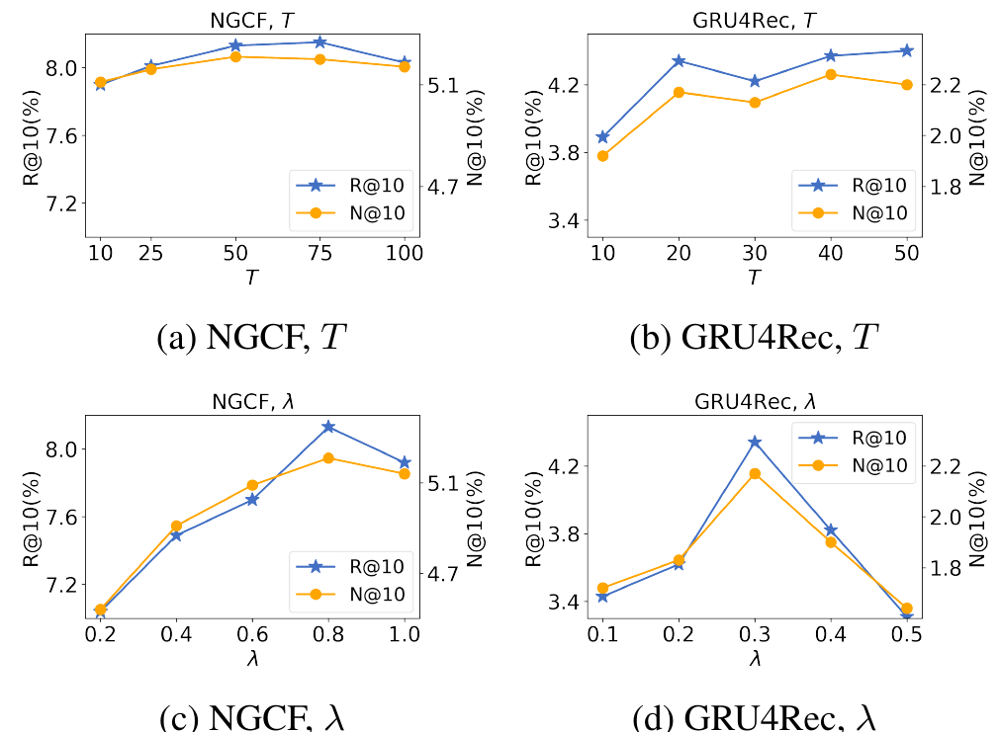

SHARE
A recommender only sees what users clicked, so negatives have to be drawn from items they did not click. Draw them carelessly and the model learns nothing; pick "hard negatives" that the model scores highly and you risk treating items the user would actually like, but never saw, as negatives. This AAAI 2026 paper from Harbin Institute of Technology and partners takes a different route: instead of sampling from the item pool, it uses a diffusion model to generate a vector "between liked and not liked" and uses that as the negative. A synthesized vector corresponds to no real item, so it never wrongly penalizes something the user really wants. Plugged into weaker models such as NGCF (a graph collaborative filtering model) and GRU4Rec, Recall@10 rises by 18% to 69%; plugged into MixGCF and AHNS (adaptive hardness negative sampling), which already mine hard negatives, it adds only 1% to 5%.
The idea is worth remembering, the specific method is not worth copying wholesale. "Generate negatives instead of sampling them" does sidestep the false-negative problem, and as a plug-in it needs no change to the original model. But the paper's own variant study shows that picking a random diffusion step already captures most of the gain, so the "adaptive" part of the title contributes little; and the experiments cover only a few small public datasets, with limited gains on strong baselines. Teams working on negative sampling for retrieval or ranking can run a cheap check of the core idea rather than adopting the full diffusion setup.
What makes negative sampling hard?
Take a beauty e-commerce example (illustrative). A user recently bought a rose-toned lipstick. In training this record is a positive and needs a negative to go with it:
| Negative source (illustrative) | Example | Problem |
|---|---|---|
| Random sampling | A can of motor oil | Too easy to tell apart; the model learns nothing |
| Hard negative mining | Another lipstick in the same shade family | The user may like it too and just never saw it, so it becomes a false negative |
| Synthesized negative | A vector that is "like a lipstick, but not quite" | Matches no real item, so nothing is wrongly penalized |
Random negative sampling is the most common approach, but most randomly drawn items have nothing to do with the user's interests. The model separates them quickly, and after that they stop providing useful signal. Hard negative mining came next: among items the user has not interacted with, pick those the model scores highly, forcing it to learn finer boundaries. MixGCF and AHNS belong to this family. The trouble with hard negatives is that many high-scoring uninteracted items are things the user would like but never got the exposure to click. Training on them as negatives teaches the model that "the user dislikes things they would like".
The paper's method is called ADAR (adaptive diffusion augmentation for recommendation). Its starting point: rather than searching real items for negatives of the "right difficulty", synthesize a vector whose difficulty can be controlled.
The overall flow: start from the positive and generate an "off" version
![Figure 1 of the paper: the structure of ADAR. Bottom left, the positive item vector is noised step by step in the forward process; in the middle, a noise-prediction network conditioned on the user vector and the step learns to recover it; on the right, reverse denoising starts from pure noise, and each step's output is a candidate negative that gets "harder" the closer it is to the end. Top right, the positive's score decides which step's output to take (the transition point t), which is added to the BPR loss as an extra negative.](../../../figs/2026-10-27/personalization/openalex_W7137888784/overview.png)
| Step | What it does | Output |
|---|---|---|
| Train diffusion | Noise the positive item vector and train a denoising network conditioned on the user vector | A diffusion model that "generates item vectors this user might like" |
| Reverse generation | Start from pure noise and denoise step by step under the user condition | One candidate vector per step, from "pure noise" to "very close to the positive" |
| Pick the transition point | Compute a step number t* from the positive's current score | Reverse generation counts down from step T to step 0; take the candidate at step t as the negative; the larger t, the closer to pure noise |
| Train the recommender | Add the synthesized negative to the negative side of the BPR loss, alongside the original negative sampling | An updated recommender |
The diffusion model and the recommender are trained in alternation. The synthesized negative is only a supplement, and the original negative sampling stays in place, so it can be attached to any model trained with BPR. The BPR loss itself is the most common pairwise loss in recommendation: push the positive's score above the negative's. ADAR's change is to add λ times "the inner product of the user and the synthesized vector" to the negative score, with λ tuned between 0 and 1.
Why does diffusion give negatives of controllable difficulty?
The forward diffusion process adds noise to a vector step by step: step 0 is the clean positive, step T is pure noise. At each step in between, how much of the original information remains is set by a coefficient that shrinks with the step number. Reverse generation runs the other way: it starts from pure noise and removes a bit of noise at each step, ending up more and more like an item this user would like.
So the outputs along the reverse process naturally form a difficulty gradient. The first few steps are almost pure noise and easy to tell from the positive, so they are easy negatives. Near the end they look very much like the positive, so they are hard negatives. Choosing a step decides how hard the negative is.
An analogy: a photo is gradually pixelated. At first you can still tell who it is, and at some moment you no longer can. ADAR wants exactly that "just unrecognizable" moment, because that frame is the best one for training the eye.
How is the transition point set?
The paper starts with a derivation. Suppose the recommender's score is the inner product of user and item vectors. After the positive is noised to step t, its expected score shrinks by a factor of , where is the share of signal still kept at that step. If the transition point is defined as the moment the score drops below some negative level , then:
is the positive's original score. A quick calculation: with a positive score of 0.8 and a negative level of 0.2, , so the item only "becomes a negative" when about 6% of the signal is left. If the positive score is only 0.4, , and it is already unrecognizable with 25% of the signal left. The conclusion: the more confident the model is that the user likes the item, the longer the item keeps its "identity" under noise, and the later the transition point.
The problem is that the negative level cannot be observed in implicit feedback. So the paper replaces it with an empirical formula:
is the current model's score for the positive, and and both default to 1. The formula keeps the direction "higher score, later transition point". Plugging in a few values, with T=20 as used for sequential recommendation:
| Positive score | After sigmoid | t* (T=20) | |
|---|---|---|---|
| −1 | 0.37 | 0.59 | about 12 |
| 0.5 | 1.65 | 0.84 | about 17 |
| 2 | 7.39 | about 1.0 | about 20 |
Because is always above 0, the sigmoid output is always above 0.5, so t* always lands in the second half, the noisier and relatively easier side. This means the "adaptive" adjustment really covers only half the range.
Experiments: big gains on weak models, small gains on strong ones
The experiments use four public datasets: Amazon Beauty, Toys and Sport, plus Yelp, each with twenty to thirty thousand users and 8 to 9 interactions per user on average. There are two task types: collaborative filtering (NGCF, LightGCN, MixGCF, AHNS) and sequential recommendation (GRU4Rec, SASRec, CL4SRec). Metrics are Recall@10/20 and NDCG@10/20. The table shows Recall@10 on Beauty (in %):
| Model | Original | With ADAR | Relative gain |
|---|---|---|---|
| NGCF | 6.37 | 8.13 | 27.6% |
| LightGCN | 8.69 | 8.99 | 3.5% |
| MixGCF | 9.82 | 10.01 | 1.9% |
| AHNS | 9.66 | 10.05 | 4.0% |
| GRU4Rec | 2.79 | 4.34 | 55.6% |
| SASRec | 5.99 | 6.32 | 5.5% |
| CL4SRec | 7.24 | 7.44 | 2.8% |
Every combination improves, and the paper reports paired t-tests as significant. But the pattern is clear: the weaker the baseline, the bigger the gain. NGCF and GRU4Rec already trail their peers, and with ADAR they gain twenty, thirty or even over fifty percent. MixGCF and AHNS already mine hard negatives, and ADAR adds only 2% to 4%. That suggests the signal ADAR provides overlaps heavily with existing hard negative mining, and the truly new part is small. The strongest sequential model, CL4SRec, gains 13.8% in NDCG@10 on Yelp, the brightest point among the strong models, which suggests contrastive learning and synthesized negatives do complement each other to some degree.

How much does the adaptive transition point actually help?
This is the experiment most worth reading in the paper. On Beauty it compares several ways to pick t*: no synthesized negative, a random step, a fixed T/2, taking the candidates at the four steps T/2, T/4, T/8 and T/10 together as four negatives of different difficulty (an approach from DMNS, a graph link prediction method that uses diffusion to generate multi-level negatives), and ADAR's adaptive formula.
| How t* is chosen | NGCF Recall@10 | GRU4Rec Recall@10 |
|---|---|---|
| No synthesized negative | 6.37 | 2.79 |
| Random step | 7.81 | 4.00 |
| Fixed T/2 | 7.79 | 3.37 |
| Mix of several fixed steps | 7.91 | 3.51 |
| Adaptive (ADAR) | 8.13 | 4.34 |
Adaptive is indeed best, but a random step already captures most of the gain. NGCF goes from 6.37 to 7.81, about 80% of the total improvement; GRU4Rec goes from 2.79 to 4.00, also close to 80%. So a more accurate statement is that the gain comes mainly from adding diffusion-generated negatives at all, and picking the step by score is a finishing touch.
Where I think it falls short
First, the "adaptive" contribution is smaller than the title suggests. In the variant study above, a random step captures about 80% of the gain, and under default parameters the empirical formula only places t* in the second half, so its adjustment range is narrow to begin with. The derivation relies on the linear assumption that scores are inner products, and the formula finally used does not correspond directly to the derived result.
Second, the experimental scale and baselines are weak. All four datasets have only twenty to thirty thousand users with fewer than 10 interactions each. The collaborative filtering task uses a random train-test split. There is no industrial data and no online experiment. NGCF and GRU4Rec, which gain the most, are weak baselines to begin with. On strong models such as MixGCF, AHNS and CL4SRec, the gain on Beauty is only 2% to 4%. Training cost also deserves attention: every mini-batch runs a full reverse diffusion (50 steps for collaborative filtering, 20 for sequential recommendation), which is no small overhead in large-scale training.
Third, λ is sensitive and has to be tuned per model. The best λ is 0.8 for NGCF and 0.3 for GRU4Rec. Moving GRU4Rec's λ from 0.3 to 0.5 drops Recall@10 from 4.34 to about 3.3, almost back to the level before the random-step variant. A new model or dataset means a new search. In addition, the synthesized negative is generated from pure noise conditioned only on the user vector, not on a specific positive item. So it is more like "a fuzzy item this user might like" than "an off version of this positive", which differs from how the paper tells it.
How a recommendation team could try it
- First check whether negative sampling is the bottleneck: look at how many of your current hard negatives were later clicked or bought by the same user. A high share means the false-negative problem is real and worth pursuing.
- Try the cheapest synthesized negatives first: skip training a diffusion model and simply add Gaussian noise of varying strength to the positive item vector, or interpolate between the positive and a random negative, and add the result to the loss as an extra negative, searching λ from 0.1 upward. The paper's variant study hints that random strength may be enough.
- If that works, consider training a small conditional diffusion model, and compare "random step" against "step chosen by score". If the two are similar, stay with the random version.
- Always validate on a strong baseline that already mines hard negatives, and record training time. A big gain on a weak baseline does not mean it will reproduce on a production model.
Bottom line
Synthesized negatives sidestep false negatives, and the direction is worth trying; but adaptively choosing the diffusion step by score is only a finishing touch, and most of the gain comes from adding generated negatives in the first place.
| Dimension | Assessment |
|---|---|
| Importance of the problem | Medium-high. Negative sampling quality directly affects retrieval and ranking, and false negatives are everywhere |
| Novelty of the method | Medium. Generating negatives with diffusion already existed in graph link prediction; this moves it to recommendation and adds a transition-point formula |
| Experimental evidence | Medium-low. Only small public datasets; 1% to 5% gains on baselines that already mine hard negatives; the adaptive part contributes little |
| Engineering cost | Medium. No change to the original model, but each batch runs an extra reverse diffusion, and λ must be tuned per model |
| Worth trying? | Start with a low-cost check using noise or interpolation; adopting the full diffusion setup is not recommended |
Discussion
Add experiment details, reproduction notes or a different take. Requires a GitHub sign-in.
Loading the discussion…